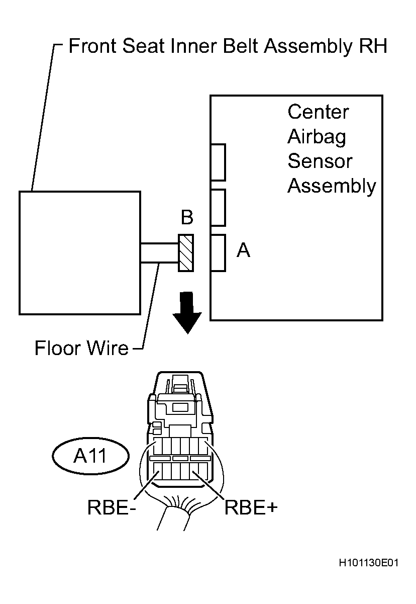

Inspection Procedure
- CHECK FLOOR WIRE (TO B+)
- Turn the ignition switch to the LOCK position.
- Disconnect the negative (-) terminal cable from the battery, and wait for at least 90 seconds.
- Disconnect the connectors from the center airbag sensor assembly and the front seat inner belt assembly RH.
- Connect the negative (-) terminal cable to the battery, and wait for at least 2 seconds.
- Measure the voltage according to the value(s) in the table below.
Standard voltage
TESTER CONNECTION - SPECIFIED CONDITION (VOLTAGE)Tester Connection (Connector "B") Condition Specified Condition A11-8 (RBE+) - Body ground Ignition switch ON Below 1 V A11-12 (RBE-) - Body ground
NG : REPAIR OR REPLACE FLOOR WIRE
OK : Go to Next Step
- CHECK FLOOR WIRE (TO GROUND)
- Turn the ignition switch to the LOCK position.
- Disconnect the negative (-) terminal cable from the battery, and wait for at least 90 seconds.
- Measure the resistance according to the value(s) in the table below.
Standard resistance
TESTER CONNECTION - SPECIFIED CONDITION (RESISTANCE)Tester Connection (Connector "B") Specified Condition A11-8 (RBE+) - Body ground 1 MΩ or higher A11-12 (RBE-) - Body ground
NG : REPAIR OR REPLACE FLOOR WIRE
OK : Go to Next Step
- CHECK FRONT SEAT INNER BELT ASSEMBLY RH
- Connect the connector to the front seat inner belt assembly RH.
- Unfasten the seat belt from the front seat inner belt RH.
- Measure the resistance according the value(s) in the table below.
Standard resistance
TESTER CONNECTION - SPECIFIED CONDITION (RESISTANCE)Tester Connection (Connector "B") Specified Condition A11-8 (RBE+) - A11-12 (RBE-) 100 to 500 Ω
NG : REPLACE FRONT SEAT INNER BELT ASSEMBLY RH

Courtesy of © TOYOTA, LICENSE AGREEMENT TMS1002OK : Go to Next Step
- CHECK FRONT SEAT INNER BELT ASSEMBLY RH
- Fasten the seat belt to the front seat inner belt RH.
- Measure the resistance according to the value(s) in the table below.
Standard resistance
TESTER CONNECTION - SPECIFIED CONDITION (RESISTANCE)Tester Connection (Connector "B") Specified Condition A11-8 (RBE+) - A11-12 (RBE-) 1.0 to 1.6 kΩ
NG : REPLACE FRONT SEAT INNER BELT ASSEMBLY RH
OK : Go to Next Step
- CHECK CENTER AIRBAG SENSOR ASSEMBLY
- Connect the connector to the center airbag sensor assembly.
- Connect the negative (-) terminal cable to the battery, and wait for at least 2 seconds.
- Turn the ignition switch to the ON position, and wait for at least 60 seconds.
- Clear the stored DTCs in the memory (see DTC CHECK / CLEAR ).
- Turn the ignition switch to the LOCK position.
- Turn the ignition switch to the ON position, and wait for at least 60 seconds.
- Check for the DTCs (see DTC CHECK / CLEAR
).
OK:
B0121/26 is not output.
HINT:
Codes other than code B0121/26 may be output at this time, but they are not related to this check.
NG : REPLACE CENTER AIRBAG SENSOR ASSEMBLY
OK : PROBLEM SYMPTOMS SIMULATION